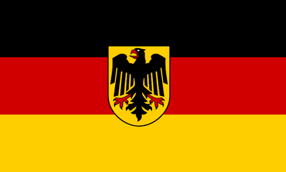

¿De qué se trató el Mundial de 1954?
La Copa Mundial de la FIFA Suiza 1954 fue la quinta edición del torneo organizado por la FIFA y se disputó entre el 16 de junio y el 4 de julio de 1954. Fue la primera Copa del Mundo celebrada en Suiza y coincidió con el 50.º aniversario de la fundación de la FIFA, cuya sede se encontraba en la ciudad de Zúrich.
El torneo reunió a dieciséis selecciones nacionales de Europa, América y Asia. Fue un campeonato recordado por su enorme cantidad de goles, ya que terminó con un promedio superior a cinco tantos por partido, el más alto en la historia de los Mundiales.
La gran sorpresa llegó en la final cuando Alemania Occidental derrotó por 3-2 a la poderosa selección de Hungría, que llevaba más de cuatro años sin perder un partido oficial. Esta histórica remontada pasó a conocerse como el "Milagro de Berna", uno de los acontecimientos más importantes de la historia del fútbol.
Información que tenés que saber
Info general
- País anfitrión: Suiza
- Fecha de Inicio:
16 de junio de 1954
(16/06/1954) - Fecha de Finalización:
4 de julio de 1954
(04/07/1954) - Duración: 19 días
- Organizador: FIFA
- Edición: V
Estadísticas
- Partidos jugados: 26
- Goles anotados: 140
- Promedio de gol: 5,38
- Máximo goleador:
Sándor Kocsis
(11 goles) - Final:
Alemania Occidental 3 - 2 Hungría
Info de la sede
- País sede: Suiza
- Ciudades sede: 6
- Estadios utilizados: 6
- Selecciones participantes: 16
- Estadio de la Final:
Wankdorf de Berna
Podio
| Posición | Selección | Bandera |
|---|---|---|
| 1º Puesto | Alemania Occidental |  |
| 2º Puesto | Hungría |  |
| 3º Puesto | Austria |  |
| 4º Puesto | Uruguay |  |
Historia del Mundial de 1954
Luego del éxito del Mundial de Brasil 1950, la FIFA decidió celebrar la quinta edición de la Copa del Mundo en Suiza, país elegido tanto por su estabilidad durante la Segunda Guerra Mundial como por albergar la sede de la FIFA en Zúrich. Además, el torneo coincidió con el 50.º aniversario de la fundación de la organización.
Dieciséis selecciones participaron del campeonato. Europa aportó doce equipos, Sudamérica dos, Norteamérica uno y Asia uno. La competencia presentó un novedoso sistema de grupos con cabezas de serie, en el que no todos los equipos disputaban la misma cantidad de partidos durante la primera fase.
La selección de Hungría llegaba como la gran favorita. Conocidos como los "Magiares Mágicos", acumulaban más de cuatro años sin conocer la derrota y contaban con figuras como Ferenc Puskás, Sándor Kocsis, Nándor Hidegkuti y Zoltán Czibor. Durante el torneo demostraron un fútbol ofensivo extraordinario goleando 9-0 a Corea del Sur y 8-3 a Alemania Occidental en la fase de grupos.
Brasil, Uruguay, Austria y Alemania Occidental también eran candidatos. Uruguay defendía el título conseguido en 1950, mientras que Alemania buscaba recuperar protagonismo internacional tras la Segunda Guerra Mundial.
En los cuartos de final Hungría eliminó a Brasil por 4-2 en un partido muy violento conocido como la "Batalla de Berna". Austria derrotó 7-5 a Suiza en el encuentro con mayor cantidad de goles en la historia de los Mundiales. Alemania Occidental eliminó a Yugoslavia y Uruguay dejó en el camino a Inglaterra.
En semifinales Hungría venció a Uruguay por 4-2 en tiempo suplementario, mientras que Alemania derrotó 6-1 a Austria para avanzar a la final.
El 4 de julio de 1954 se disputó la gran final en el Estadio Wankdorf de Berna. Hungría comenzó ganando rápidamente por 2-0 gracias a los goles de Ferenc Puskás y Zoltán Czibor. Sin embargo, Alemania reaccionó inmediatamente con tantos de Max Morlock y Helmut Rahn para igualar el marcador.
A pocos minutos del final, Helmut Rahn convirtió el 3-2 definitivo que le dio a Alemania Occidental su primer título mundial. La inesperada remontada quedó inmortalizada como el "Milagro de Berna", considerado uno de los partidos más importantes de toda la historia del fútbol.
La Pelota Oficial

Swiss World Champion Match Ball
El Mundial de Suiza 1954 utilizó una pelota de cuero marrón fabricada especialmente para el torneo. Fue una evolución de los balones utilizados en Brasil 1950 y presentaba una mayor resistencia al agua y mejores costuras, ofreciendo un comportamiento más uniforme durante los partidos.
Aunque todavía no existía un balón oficial producido por una única empresa para toda la competencia, este modelo representó un importante avance tecnológico para la época y ayudó a mejorar la calidad del juego.
Selecciones participantes
| Confederación | Selecciones |
|---|---|
| Europa (12) | Alemania Occidental, Austria, Bélgica, Escocia, Francia, Hungría, Inglaterra, Italia, Suiza, Turquía, Yugoslavia y Checoslovaquia. |
| Sudamérica (2) | Brasil y Uruguay. |
| Norteamérica (1) | México. |
| Asia (1) | Corea del Sur. |
Ciudades sede
| Ciudad | Estadio |
|---|---|
| Basilea | St. Jakob Stadium |
| Berna | Wankdorf Stadium |
| Ginebra | Charmilles Stadium |
| Lausana | Pontaise Stadium |
| Lugano | Cornaredo Stadium |
| Zúrich | Hardturm Stadium |
Formato del torneo
El Mundial de 1954 contó con un formato diferente al de las ediciones anteriores. Las dieciséis selecciones fueron divididas en cuatro grupos de cuatro equipos. En cada grupo había dos cabezas de serie y dos equipos no cabezas de serie.
Cada selección disputó únicamente dos partidos en la fase de grupos: los cabezas de serie enfrentaban solo a los equipos no cabezas de serie y viceversa. Si existía empate en el segundo puesto, se jugaba un partido de desempate para definir la clasificación.
Los dos mejores equipos de cada grupo avanzaban a los cuartos de final. Desde esa instancia, el torneo continuó con eliminación directa hasta llegar a la gran final.
Árbitros destacados
- William Ling (Inglaterra)
- Benjamin Griffiths (Gales)
- Louis Fauquemberghe (Francia)
- Juan Brozzi (Italia)
- Leo Horn (Países Bajos)
- Ivan Eklind (Suecia)
- Arthur Ellis (Inglaterra)
- George Reader (Inglaterra)
Curiosidades del Mundial
- Fue el Mundial con el promedio de goles más alto de la historia: 5,38 goles por partido.
- Austria venció a Suiza por 7-5 en el encuentro con más goles registrado en una Copa del Mundo.
- Hungría llegó invicta a la final con una racha de más de cuatro años sin perder.
- Alemania Occidental consiguió su primer título mundial tras remontar un 0-2 en la final.
- La final es recordada como el famoso "Milagro de Berna".